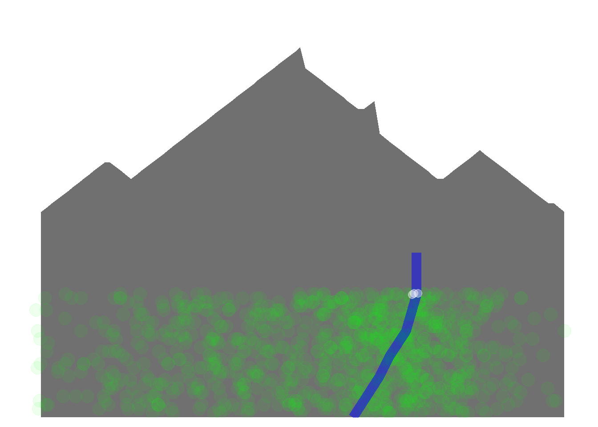

This is my attempt at contributing to data science, data visualization, business intelligence, dashboarding, and databases.
You may be familiar with the phrase “On the Shoulders of Giants”. A nod to the fact that virtually nothing great is accomplished without the effort and aptitude of those who came before. The wagon requires the wheel, the modern computer requires the transistor, the light bulb requires electricity, ad infinitum. Likewise, this site (and every site for that matter) is built on the shoulders of giants. It’s amazing what we can accomplish with just a bit of internet research / giant-hunting.
plot_df <- data.frame(
# x = rep(1:100,10),
# y = rep(1:100,10),
# mountain = round(rnorm(1000,mean=50,sd=20)),
mountain_x = c(1:100,rep(NA,900)),
mountain_y = c(50:62,62:58,59:90,
#on the way back down
85:75,75:77,69:58,58:64,65:52,52:50,
rep(NA,900)),
tree_x = c(rnorm(500,mean=40,sd=20),
rnorm(500,mean=70,sd=10)),
tree_y = sample(1:30,1000,replace=TRUE),
river_x = c(60,65,67,70,72,72,rep(NA,994)),
river_y = c(0,10,15,21,30,40,rep(NA,994)),
waterfall_x = c(rep(72,3),rep(NA,997)),
waterfall_y = c(rep(30,3),rep(NA,997))
) %>%
mutate_all(abs) # remove any negative numbers## Warning: package 'bindrcpp' was built under R version 3.4.3ggplot(plot_df) +
geom_area(aes(x=mountain_x,y=mountain_y),alpha=.7) +
geom_point(aes(x=tree_x,y=tree_y),color="green",size=5,alpha = 1/15) +
geom_line(aes(x=river_x,y=river_y),color="blue",size=4,alpha = .5) +
geom_jitter(aes(x=waterfall_x,y=waterfall_y),color="white",alpha=.4,width = 1,size=3) +
# geom_ribbon() # for shoreline?
scale_y_continuous(expand = c(0,0),
limits = c(0,100)) +
theme_minimal() +
theme(panel.background = element_blank(),
panel.grid = element_blank(),
axis.text = element_blank(),
axis.title = element_blank())## Warning: Removed 900 rows containing missing values (position_stack).## Warning: Removed 994 rows containing missing values (geom_path).## Warning: Removed 997 rows containing missing values (geom_point).